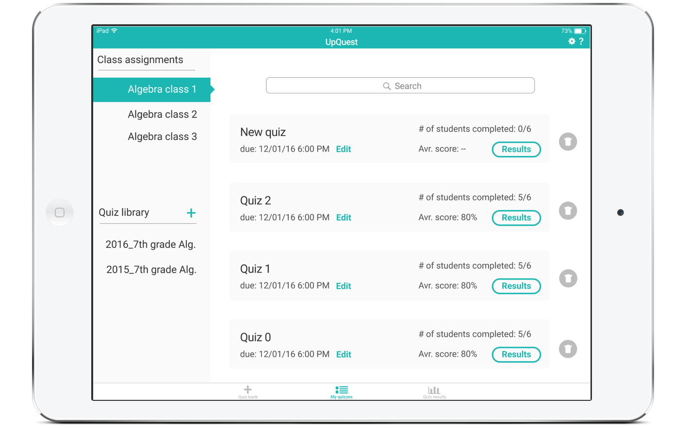
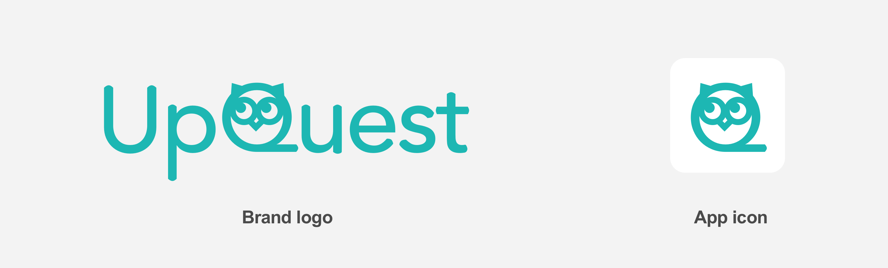
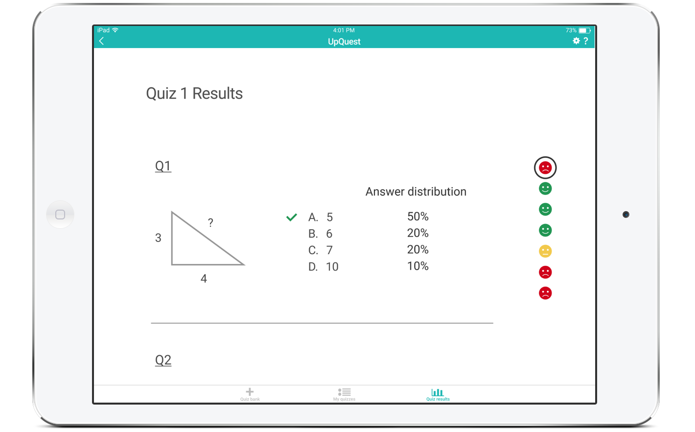

UpQuest
- 3 min read
my Role
- Logo design
- UX research
- UI & UX Design
Team members
- Matt Chen (UX research, wireframing & developing)
- Tyler Berbert (UX research, wireframing & developing)

What's the problem?
My ex-housemate at Stanford, Aileen, had just graduated and become an elementary school teacher. Three months into her first job, we talked. “It’s so hard!” said Aileen. “I spent so much time trying to figure out what my students knew.” Wondering if it is a common problem, my teammates and I went on to talk to four more K-12 teachers, all of whom teaching different years and subjects.
“I have too many students! I can’t pay enough attention to each of them.”
“My students have such different knowledge levels. What can I do? I teach to the middle.”
“Making and grading quizzes take so much time...”
“Existing quiz apps are clunky and complicated. I don’t have time for them.”
“Those test banks suck!”
It seems like each of them has a bit of different angle of looking at the problems present in their teaching. Using these insights, we distilled a common denominator in the problems facing K-12 teachers:
The difficulty in tracking students’ knowledge levels and adjusting teaching plans accordingly.
What's the solution?
Our iPad app helps collect, analyze and visualize data on students' knowledge levels. It allows teachers to make and assign quizzes from a large quiz bank. The quiz results will then be analyzed to give teachers a detailed picture of their students' strong and weak points, so that they can adjust their teaching plans more accurately. Problems like huge class sizes and vastly different knowledge levels can never be solved single-handedly by techonology. But our vision is that with the help of a better tracking and analytics tool, these issues could be at least partially addressed.
You can find a working prototype here. Or watch it with me. ↓
Act I: Making quizzes
Quiz bank
The teacher can make quizzes by choosing questions or quizzes from our quiz bank, which includes questions from large test banks and quizzes made by our users. Searching, sorting and filtering functions help his/her accomplish the task efficiently. The questions came with tags that would later be used to systematically analyzed. (S)he can also create his/her own questions or copy and edit existing questions from the bank.
Act II: Managing quizzes

My quizzes
Once a quiz is created and assigned, the teacher can go to the "My quizzes" tab, which shows all the class assignments through the left side menu. A quiz library is listed under the assignments. This is where (s)he can find all the quizzes (s)he has created in previous years and different classes. This way (s)he can assign quizzes from his/her own library.
Act III: Checking quiz results
Historical performances of the class. Unfortunately, Alex is falling behind.
Tagging system says Alex has been weak on polynomials for his entire school life.
Poor Alex got it wrong.
The teacher can go to the "Quiz results" tab and check results for all the quizzes. There are multiple ways (s)he can see the results, as seen above. The tags attached with the quiz questions would be analyzed and give him/her a granular understanding of her students' knowledge levels.
Logo

My teammates trusted me with the responsibility of making the logo of the app. I set out with a goal to make a logo that has a cute and playful flavor, while keeping a professional feeling. The reason is that this app is for K-12 teachers, and it could use a little cuteness that makes teachers smile while tapping it (since looking at the quiz results isn't always fun). I played around with the letters and decided to change the letter Q into an owl, because it is the symbol of wisdom, which fits the educational nature of our app. The owl is looking upward, which gives off a curious look and conveys the ideas of "up" and "question". This was also where we got our name. I chose Avenir as the typeface as it has the most rounded/cute Q (not counting Comic Sans), and I manually adjusted all the ends of the strokes to make them look rounded, in tandem with the cute owl.
Hold on. How did you get there?
If you have 10 minutes to spare, you can find a comprehensive case study written in chronological order here.
Here I will focus on some major challenges we dealt with to show you how the design evolved through the process.
1. How to navigate through the app?
Through competitor analysis, we found that one of the issues with existing quiz apps was that the navigation was often confusing. Two major qeustions are: 1) Where should teachers create quizzes from? A separate "Quiz bank" section or a button next to existing quizzes? 2) Should there be a "Students" section where teachers can check on individual students' data?
Throughout different phases, we tried out various ways to break down the navigation structure. The first three approaches we tried all put the creation and management of quizzes under one "Quizzes" section, which proved to be confusing during user tests. The first two approaches offered a separate "Students" section, which our testers found too similar to the "Quiz results" section.
We settled down with a bottom menu with three tabs that correspond with the three major user tasks: creating quizzes, managing existing quizzes, and checking out quiz results. To check on individual students, the teacher can go to the "Quiz results" section and search for names. This way the structure of the app became very clear. Settings and Help sit at the top right corner, instead of occupying separate tabs, which is unnecessary due to lower user needs.

2. How to display student data?
So we decided all students data should go to one "Quiz results" section, where we show a spreadsheet of all students' all quiz results. Student names and quizzes/tags are buttons that lead to individual student/quiz/tag pages. How do we do data visualization for these pages?
When presenting quiz results, we used color coding to distinguish between right and wrong answers and among different performance levels. But one thing we had to consider was color blindness.
Instead of changing colors of the numbers or cubes themselves, we used additional dots to do the color coding.

For the floating side menu, different faces served as additional clues. Same with ckecks and crosses on Alex's individual quiz result page.
What did you learn?
- Close collaboration between designers and engineers is hard but rewarding.
- User feedback is the key to creating better experience, and the most convincing argument for making decisions.
- Fast prototyping/iterations is everything!